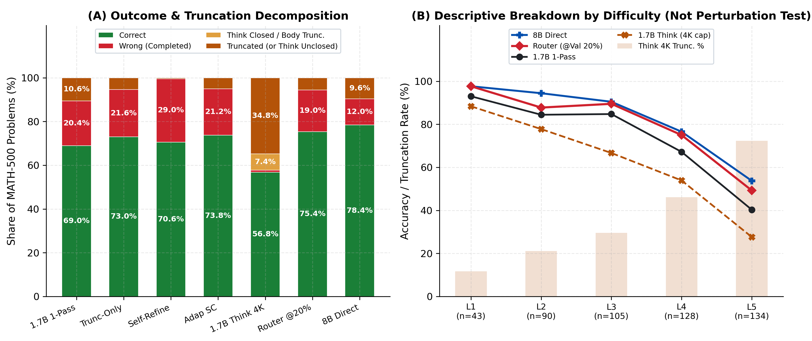
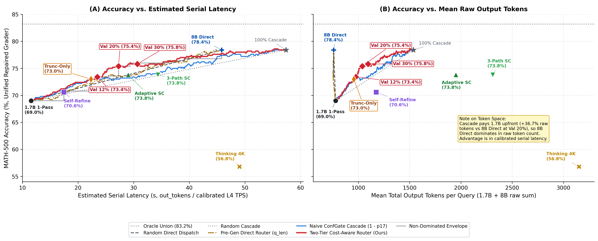
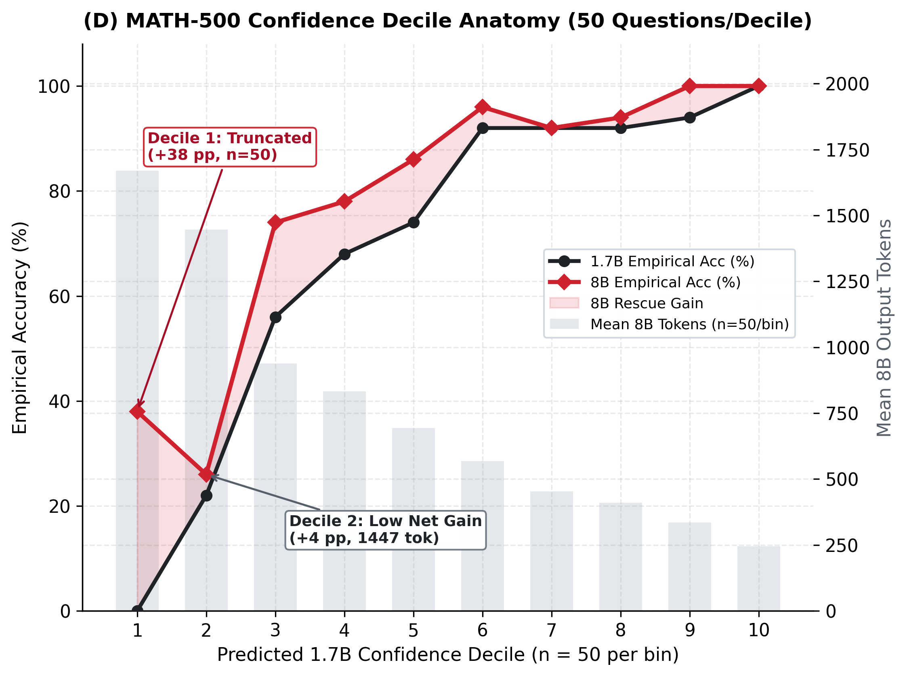
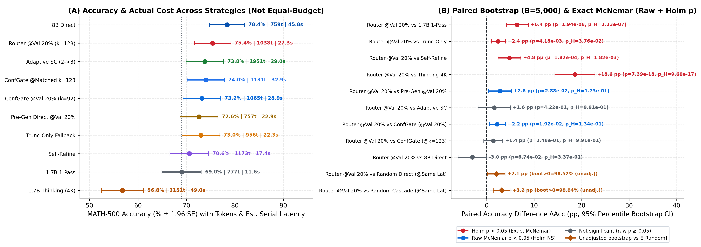
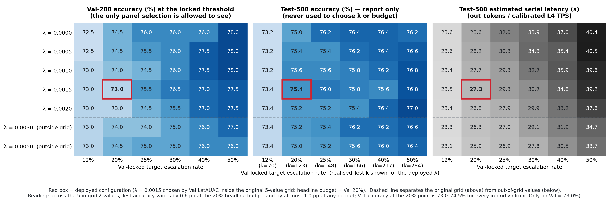
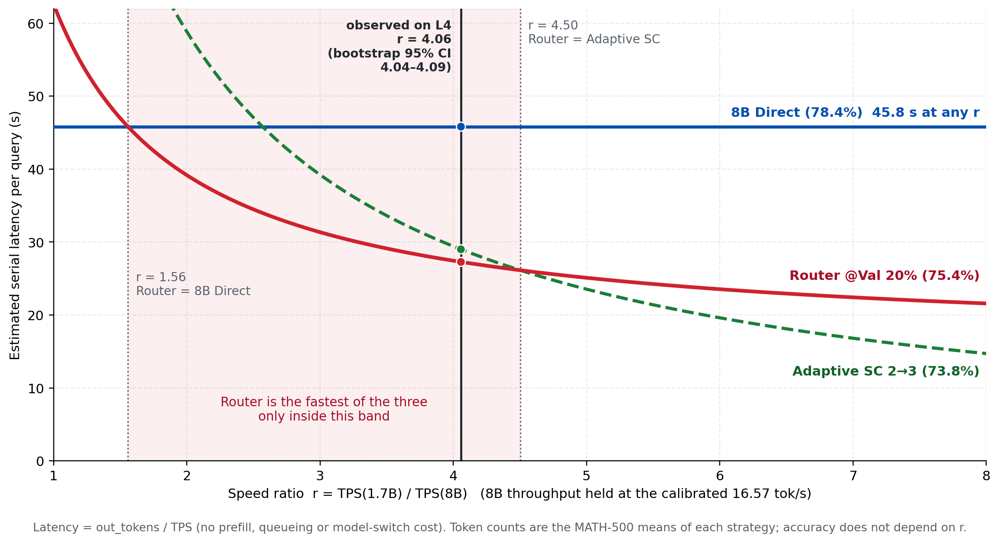
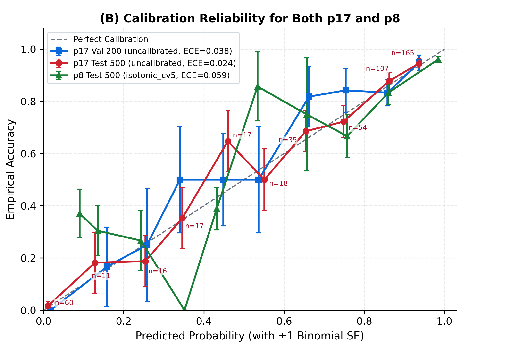
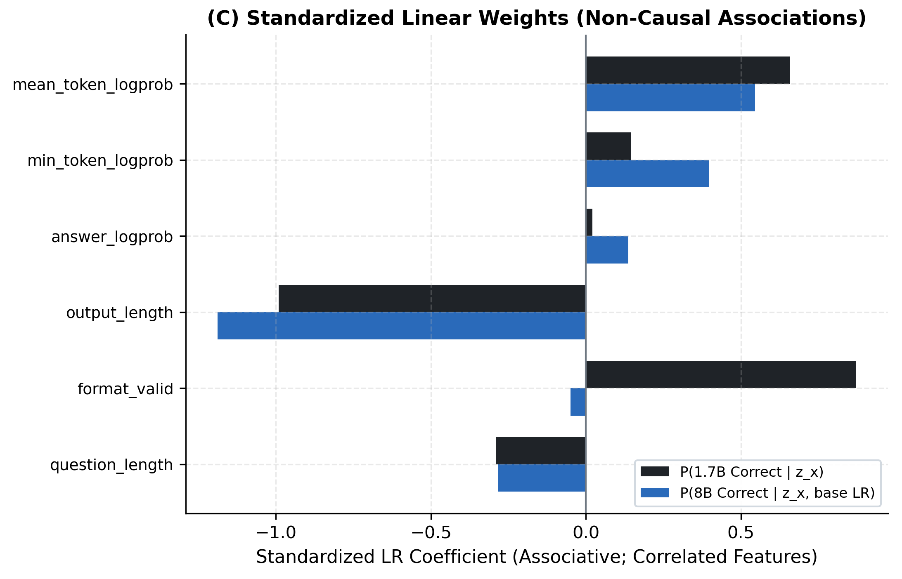

Training a Cost-Aware Router Helper (1.7B → 8B) on MATH-500 · Zishun Liu · November 18, 2026
MATH-500Gets 69.0% accuracy in only 11.6 s per problem (~777 tokens).
Reaches 78.4% accuracy, but takes 45.8 s per problem (~759 tokens).
8B token takes 4× longer than one 1.7B token.
1.7B answers when possible, and ask 8B only when needed.
1.7B close this gap, or do we need a Router Helper to send hard cases to 8B?
| Strategy | Mode & Decoding | How It Works (Plain View) | Acc | Est. Time |
|---|---|---|---|---|
| 1. 1.7B Single Pass | Direct Greedy | Write step-by-step solution once (max 2K tokens). Fast baseline. | 69.0% | 11.6 s |
| 2. Self-Refine | Direct Greedy | Write draft → ask 1.7B to review its own draft → rewrite if needed. |
70.6% | 17.4 s |
| 3. Adaptive SC (2→3) | Direct Sampling | Run 2 random paths; stop early if they agree, else use 3rd path to vote. | 73.8% | 29.0 s |
| 4. 1.7B Thinking (4K) | Think Sampling | Think silently inside <think>...</think> first, then write answer (max 4K). |
56.8% | 49.0 s |
| 5. 8B Direct | Direct Greedy | Skip 1.7B completely; solve directly with the large 8B model. |
78.4% | 45.8 s |
Why Greedy vs. Sampling? Greedy picks the top word every time so single-pass results are repeatable. Sampling adds controlled randomness so voting gets diverse paths.
Direct vs. Thinking? Both write step-by-step math! Thinking adds a hidden scratchpad before answering, which uses far more tokens.

8 cut-off drafts.42.2% hit the 4K cap (34.8% in <think>, 7.4% in body), dropping total score despite 98.3% when finished.29.0 s per problem.
Next Step → Staying inside 1.7B hits a wall. Instead, let us build a Router Helper to send hard problems to 8B!
8B replaces 1.7B, cases where both are right cancel out—leaving chance 8B fixes minus chance 8B breaks.
ConfGate only asks if 1.7B looks wrong ($1-\hat{p}_{17}$). We check both if 8B can help and how long it takes.
8B ($\lambda=0.0015$, 24.6% routed on Test).
Only signals observable during the first pass (difficulty level & true answers are hidden).
\boxed{...}1.7B got it right ($\hat{p}_{17}$) and if 8B solves it ($\hat{p}_8$).
8B will take ($\widehat{\text{Lat}}_8$, correlation $r = 0.85$ on Test).
600 rows and 6 clues, Random Forest/GBDT gave nearly identical CV scores—linear models are simpler and safer.

8B Direct (78.4% in 45.8 s), trading 3.0% accuracy.
+36.7% tokens) because we run 1.7B first. The 4× speed gap flips the ranking in time.
ConfGate (27.3 s vs. 32.9 s; 75.4% vs. 74.0%) by skipping slow, hopeless cases.

8B token length.
0% → 38% (+38% rescue) — clearly worth sending.+4% gain (22% → 26%), while 8B writes 1,447 tokens.1.7B errors well (AUC 0.89), but weakly predict 8B rescue (AUC 0.65).1.7B has very low confidence (6.3%).8B will also struggle (8.9%) and take too long (108 s).8B fails anyway after 86 s — skipping saves wasted wait time.
1.7B (+6.4%), Thinking 4K (+18.6%), Self-Refine (+4.8%), and Trunc-Only (+2.4%, $p_H = 0.038$).
ConfGate, Adaptive SC, or 8B (−3.0%, $p = 0.067$). Do not claim equal accuracy to 8B (CI reaches −6.0%).
| Policy | Val (n = 200) | Test (n = 500) |
|---|---|---|
Truncation-Only Fallback |
73.0% (22.3 s) | 73.0% (22.3 s) |
Cost-Aware Router (Ours) |
73.0% (26.1 s) | 75.4% (27.3 s) |
Naive ConfGate |
75.0% (29.7 s) | 73.2% (28.9 s) |
Works on both Val & Test: Rescuing cut-off answers (+4.0% to +4.5%) and saving time vs. ConfGate (−3.6 s Val / −5.6 s Test).
Only seen on Test: Extra gain on finished answers (+2.4% Tier-2 lift on Test; 0 on Val where 18 Tier-2 picks gave +1/−1 under weak rescue AUC 0.65).
1.7B struggles; rescuing cut-off drafts gives steady gains across datasets.
8B Direct (using +36.7% more tokens) and 5.6 s faster than ConfGate at equal switches ($k=123$).
4K–8K), use finer step-level clues, add two-path agreement, and test on a larger sample.
| Policy | Val Target | Val Acc (k) | Val Lat | Test Acc (k) | Test Lat |
|---|---|---|---|---|---|
| 1.7B 1-Pass / 8B Direct | — | 68.5% / 83.5% | 12.3 / 48.0s | 69.0% / 78.4% | 11.6 / 45.8s |
| Truncation-Only Fallback | fixed | 73.0% (22) | 22.29 s | 73.0% (53) | 22.31 s |
| Cost-Aware Router | 12% | 73.0% (24) | 22.57 s | 73.4% (70) | 23.47 s |
| Cost-Aware Router | 20% | 73.0% (40) | 26.09 s | 75.4% (123) | 27.28 s |
| Cost-Aware Router | 25% | 75.5% (50) | 27.64 s | 76.0% (148) | 29.35 s |
| Cost-Aware Router | 30% | 76.5% (60) | 30.07 s | 75.8% (166) | 30.66 s |
| Cost-Aware Router | 40% | 77.0% (80) | 33.62 s | 75.6% (217) | 34.76 s |
| Cost-Aware Router | 50% | 77.5% (100) | 36.14 s | 76.8% (284) | 39.16 s |
| Naive ConfGate ($1-\hat{p}_{17}$) | 12% | 73.0% (24) | 23.13 s | 73.0% (57) | 23.10 s |
| Naive ConfGate ($1-\hat{p}_{17}$) | 20% | 75.0% (40) | 29.67 s | 73.2% (92) | 28.90 s |
| Naive ConfGate ($1-\hat{p}_{17}$) | 25% | 75.0% (50) | 33.39 s | 73.6% (114) | 31.75 s |
| Naive ConfGate ($1-\hat{p}_{17}$) | 30% | 76.5% (60) | 37.20 s | 75.2% (153) | 36.26 s |
| Naive ConfGate ($1-\hat{p}_{17}$) | 40% | 78.5% (80) | 42.83 s | 76.2% (214) | 42.74 s |
| Naive ConfGate ($1-\hat{p}_{17}$) | 50% | 79.5% (100) | 47.17 s | 76.6% (240) | 44.71 s |
| Pre-Gen Direct (q_len) | 12% | 70.0% (25) | 18.36 s | 70.8% (65) | 18.34 s |
| Pre-Gen Direct (q_len) | 20% | 71.5% (41) | 23.09 s | 72.6% (109) | 22.95 s |
| Pre-Gen Direct (q_len) | 25% | 72.5% (50) | 25.20 s | 73.6% (141) | 25.47 s |
| Pre-Gen Direct (q_len) | 30% | 74.5% (60) | 27.02 s | 73.6% (170) | 28.29 s |
| Pre-Gen Direct (q_len) | 40% | 77.0% (80) | 30.10 s | 75.0% (222) | 32.12 s |
| Pre-Gen Direct (q_len) | 50% | 78.5% (102) | 34.44 s | 76.4% (284) | 36.34 s |
+1 / −1 = 0 net gain (random expectation +2.1, sd 1.5, $P \ge 0$ is 0.972).+14 / −2 = +12 net gain (random expectation +4.2, sd 3.1, $P \ge 12$ is 0.011).Val 30% (76.5%, 30.07 s) beats ConfGate at Val 20% (75.0%, 29.67 s).
In 8×5-fold Dev CV (n=800, 20% budget), fixed-LR/LR gives 74.31% (25.7 s) vs. Trunc+Random 74.09% (+0.22 ± 0.55 pp) and Trunc+ConfGate 74.23% (29.2 s); LR/iso gives 74.28% (24.9 s). Across 45 calibration×$\lambda$ cells, Test stays in 74.6%–75.8%.

Weak identifiability of $\lambda$ vs. flat Test sensitivity: Inside the pre-specified grid $\lambda \in [0, 0.002]$, Val LatAUAC spans only 0.7651–0.7680 (maximum 0.7680 at $\lambda = 0.0015$, plateauing near 0.7680 at $\lambda = 0.01$). At Val 20%, Test accuracy varies by only 0.6 pp (75.0%–75.6%) across $[0, 0.002]$, supporting flat sensitivity rather than claiming optimality.

67.24 / 16.57 tok/s; paired bootstrap 95% CI [4.04, 4.09]).
Router @Val 20% achieves lower estimated serial latency than both 8B Direct and Adaptive SC inside 8B Direct (759.4 tok) is faster than paying 1.7B upfront + 24.6% escalation (1,037.9 total tok).
1.7B sampling (Adaptive SC, 1,950.6 tok) becomes faster than escalating 24.6% of queries to 8B.


p17 uncalibrated (Val ECE = 0.038, Test ECE = 0.024); p8 5-fold isotonic (Val ECE = 0.086, Test ECE = 0.059).P(8B Correct | z_x); deployed p8 averages 5 CV isotonic calibrators.wrong → correct, 0 FP) across 8 problems (4 Dev, 21 Test).grading_sensitivity_audit.json): Train 5 (3 prob.), Val 0, Test 11 (3 prob.). Extended probes also cover decimal thousands (1,234.56) and set braces (\{1,234\}).| Configuration | Esc % | Acc % | Trunc % | Tokens | Est. Lat | Batch s |
|---|---|---|---|---|---|---|
| Atom 1: 1.7B Non-Think (1-Pass) | 0.0 | 69.0 | 10.6 | 777.4 | 11.56s | 0.562 |
| Truncation-Only Fallback (1.7B→8B) | 10.6 | 73.0 | 5.4 | 955.5 | 22.31s | 0.825 |
| Atom 2: 1.7B Self-Refine | 0.0 | 70.6 | 0.4 | 1173.1 | 17.45s | 1.180 |
| Atom 3a: 1.7B Adaptive SC (2→3) | 0.0 | 73.8 | 5.0 | 1950.6 | 29.01s | 1.125 |
| Atom 3b: 1.7B 3-Path Majority SC | 0.0 | 73.8 | 5.0 | 2310.5 | 34.36s | 1.460 |
| Atom 5: 1.7B Thinking (max=4096) | 0.0 | 56.8 | 42.2 | 3151.1 | 49.02s | 3.726 |
| Pre-Gen Direct Router (q_len, Val 20%) | 21.8 | 72.6 | 10.6 | 757.2 | 22.95s | 0.973 |
| Pre-Gen Direct Router (q_len, Val 30%) | 34.0 | 73.6 | 10.6 | 758.4 | 28.29s | 1.202 |
| Naive ConfGate (Val 20%) | 18.4 | 73.2 | 8.2 | 1064.7 | 28.90s | 1.017 |
| Naive ConfGate (Matched k=123) | 24.6 | 74.0 | 8.8 | 1130.6 | 32.88s | 1.170 |
| Hurdle + Trunc Priority (Val 20%) | 24.4 | 75.4 | 5.6 | 1036.0 | 27.17s | 1.153 |
| Cost-Aware Router (Ours, Val 12%) | 14.0 | 73.4 | 5.4 | 974.7 | 23.47s | 0.905 |
| Cost-Aware Router (Ours, Val 20%) | 24.6 | 75.4 | 5.6 | 1037.9 | 27.28s | 1.158 |
| Cost-Aware Router (Ours, Val 25%) | 29.6 | 76.0 | 5.6 | 1072.1 | 29.35s | 1.281 |
| Cost-Aware Router (Ours, Val 30%) | 33.2 | 75.8 | 5.6 | 1093.8 | 30.66s | 1.371 |
| Cost-Aware Router (Ours, Val 40%) | 43.4 | 75.6 | 6.2 | 1161.8 | 34.76s | 1.618 |
| Cost-Aware Router (Ours, Val 50%) | 56.8 | 76.8 | 6.4 | 1234.6 | 39.16s | 1.950 |
| Atom 4: 8B Non-Think (Direct) | 100.0 | 78.4 | 9.6 | 759.4 | 45.82s | 2.453 |
| 100% Cascade (1.7B → 8B) | 100.0 | 78.4 | 9.6 | 1536.7 | 57.38s | 3.015 |
test/prealgebra/1512.json · Level 5 · Truth: $7\pi$
1.7B wrong: $33\pi$ (530 tok, completed).Self-Refine critique endorses error ("correctly identifies...") → stays $33\pi$.8B solves ($7\pi$, 601 tok).test/number_theory/488.json · Level 4 · Truth: 58
1.7B hits 2,048-token cap (extracted 68, truncated).Self-Refine finishes draft but gets 171 (wrong).8B solves cleanly (58, 987 tok).